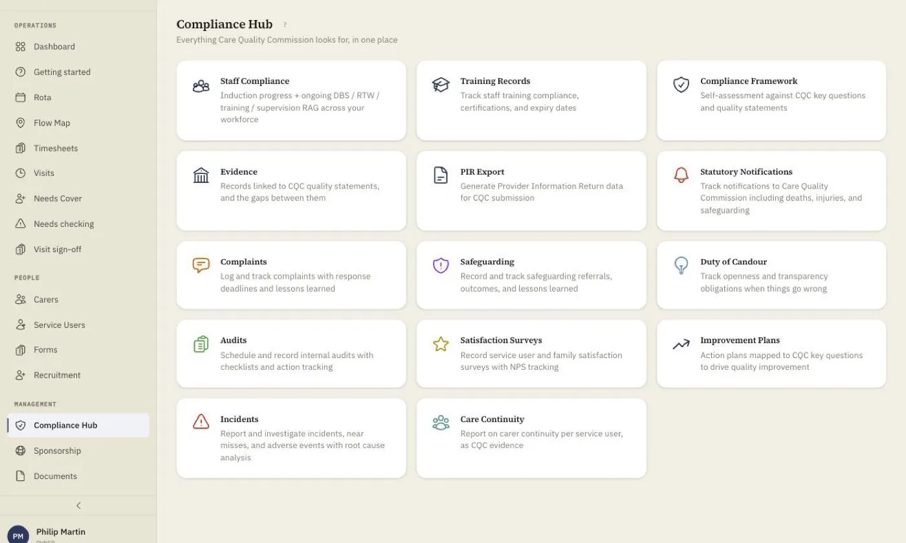

Home Care Compliance for CQC, CIW, Care Inspectorate & RQIA
Four-nation regulatory compliance for UK domiciliary agencies, built into every workflow. CQC, CIW, Care Inspectorate and RQIA frameworks are woven into the fabric of homecareOS, so you are always inspection-ready, not just when inspectors come knocking.
Stop Preparing for Inspections. Be Ready Always.
Compliance should not be a last-minute scramble before an inspection. With homecareOS, every visit logged, every care note written, and every training record tracked feeds directly into your compliance picture. Your data is always current, always accurate, and always audit-ready, because compliance is not a separate task, it is how you work every day. New to the regulatory landscape? Our guide to home care compliance in the four UK nations explains how CQC, CIW, the Care Inspectorate and RQIA each approach domiciliary care.

Compliance That Works With You, Not Against You
Four-Nation Coverage
CQC (England), CIW (Wales), Care Inspectorate (Scotland), RQIA (Northern Ireland). One platform, all regulatory frameworks.
PIR Auto-Generation
Provider Information Return data populated automatically from your live operations. No more weeks of manual data gathering.
Scheduled Audits
Create audit templates, schedule recurring audits, assign actions, and track completion. Build a culture of continuous improvement.
Incident Management
Log incidents, assign follow-up actions, track safeguarding referrals, and maintain complete timelines. Nothing falls through the cracks.
Self-Assessment Tools
Map your performance against regulatory frameworks with guided self-assessments that highlight gaps before inspectors find them.
Training Compliance Dashboard
Instant visibility into who's trained, who's expiring, and who's overdue. Automatic alerts before certifications lapse.
Complete Regulatory Toolkit
CQC Key Lines of Enquiry (KLOE) mapping
CIW Quality Framework alignment
Care Inspectorate quality indicators
RQIA standards tracking
PIR data auto-population
Compliance self-assessment builder
Scheduled audit management
Incident logging and tracking
Safeguarding referral management
Action plan tracking with deadlines
Nation-specific DBS/SCW/SSSC/NISCC tracking
Compliance dashboard with RAG status
Digital Forms, Confirmations and Carer Sign-off
Build any form or checklist once, send it to the carers who need it, and have them complete and sign it on the app. Consent, spot checks, supervisions, competency checks, risk assessments and daily confirmations become structured, timestamped records instead of paper. Every submission and signature is captured with the carer's name and written to an immutable audit trail, so you can evidence exactly who confirmed what, and when, for CQC, CIW, the Care Inspectorate or RQIA.
Form builder for reusable templates, no developer needed
Send or assign a form to the right carers, with a due date
Carers complete and submit on the app, with drafts saved as they go
Read-and-confirm sign-off on policies, care plans and updated risk assessments
Captured e-signature with the carer's typed name, timestamped
Each form snapshotted on send, so the record cannot drift after the fact
Automatic reminders and overdue flags for anything still unconfirmed
An immutable audit trail of who confirmed what, and when
Attestations you can show an inspector in seconds, across all four nations
The Cost of Compliance Failures
Missed and rushed visits are a recognised safety and quality risk in the research. It's why homecareOS flags late and missed visits in real time.
See the evidence →Be Inspection-Ready from Day One
See how homecareOS keeps your agency compliant across all four UK nations, without the stress of last-minute preparation.
Compare homecareOS to your current software
See how we stack up against every major UK home care platform, feature by feature, transparent pricing, no fluff.